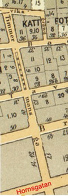
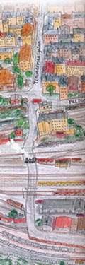

|
 1899. Timmermansgatan från Södermälarstrand till Hornsgatan |

Timmermansgatan sträcker sig från Bastugatan i norr till Fatbursgatan i söder och är cirka 750 meter lång. Norr om Bastugatan slutar Timmermansgatan i en trappa upp till Mariaberget och Monteliusvägen. Timmermansgatan fick sitt nuvarande namn fastställt år 1857, men redan 1647 omnämns den som Timbremans gathun. Namnet härrör från timmermansämbetets gård som låg i hörnet Timmermansgatan och Högbergsgatan. Delar av gatan hade tidigare olika namn, som Bengt Bryggares gränd (1670), Arfweds Dawids gata (1674), Arfwidh Dawidz gata (1679) och Arfwids Dawids gatan (1754). Denne Arvid Davidsson var en rådman som hade sin trädgård vid gatan. Timmermansgatan passerar mellan Hornsgatan och Sankt Paulsgatan kvarteret Rosendal mindre. Hörnhuset mot Hornsgatan i detta kvarter uppfördes på 1970-talet medan Södermalmsskolan med adress Timmermansgatan 21 ritades av arkitekten David Dahl i funkisstil på 1930-talet. Vid Timmermansgatan 2 ligger det kulturhistoriskt värdefulla huset Mälarborgen som restes 1889 enligt Gustaf Hermanssons ritningar och vilket genom sitt läge vid Mariabergets brant är en omisskännlig del av bergets siluett. |
 Timmermansgatan från Högbergsgatan ned till Södra stationsområdet Ur Södertur 2, Johan Eriksson och Per Lindroos |


{kind=link}
{kind=link}